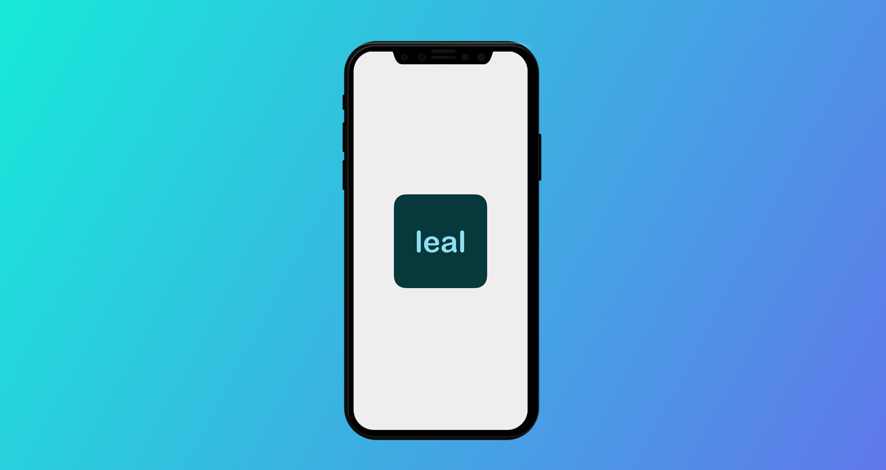

leal
Loyalty Program app
for Small and Medium Business

About
leal is an application made to make loyalty programs and rewards systems easy and accessible for small and medium businesses. In order to achieve that, the app will track the users by their phone numbers and allow businesses to reward their regular customers in a variety of ways. The application also features a robust cloud-based admin dashboard that will collect customers’ data and display it to business owners.
The team working on the project consisted of 5 people, 3 developers and 2 designers. We had to wear multiple hats during the project. In addition to being the UX Design Lead, I also had the opportunity to work on the product UI, Social Media assets and Printed assets.
- 👂🏻UX Research
- 💡Ideation
- 🛠UX Design
- 🔄Prototyping
- 🔮UI Design
- 🍏Branding
- 🗂Project Management
Hats Worn
Leal means Loyal
The concept of leal was inspired by already existing technology of guest engagement in Brazilian and Ukrainian restaurants. These businesses have their own apps that incentivize their guests to return and simultaneously gather impactful data about them. We wanted to create a similar technology for small businesses, such as grocery stores, barbershops or yoga studios. We aim to replace traditional loyalty programs such as punch cards and coupons. One of the biggest project challenges is to make the app a white-label so that different small businesses can adopt this loyalty program.
Project Requirements
leal has a few very specific tasks and constraints. There was a very strict deadline of 12 weeks and the tasks had to be completed in weekly sprints. The goal of the project was to develop a concept from an idea phase to a functioning minimal viable prototype.
As the finalle of our education at Langara, Capstone had to solve a real-world problem. Moreover, it had to utilize all of the technologies we learned in the program. It had to include a Web app, a native app for both iOS and Android and the product had to utilize cloud technology in some way. The Release date was scheduled for 4th of December 2018, where we had to present the project to the panel of industry specialists.
Goals and Expectations
In order to understand our project better and to define our UX strategy we created the UX Blueprint. UX Blueprint showed us the key areas we need to focus on in order to deliver the MVP on time. As the result, we came up with a development plan and clear benchmarks of success to compare to at the end of the project.
Project Features
Even before the deep dive into competitors’ research, we understood that there are multiple ways of solving this problem already. In order to make an interesting product, we decided to focus on lowering the participation barriers for the customers and provide useful and relevant marketing information for the businesses.
One of the insights we got from the research was the need for flexibility in the rewards system. The businesses we observed had different business models, and each required their own approach to their customers. Hence, we provide the business owner with a choice of reward for each individual loyalty program.
The second major insight we gained was about the immediacy of the process. People don’t want to waste time when they are in a queue. Any new process we introduce into an already working system must be integrated and fast. To ensure that, we developed a native tablet app
User Empathy
Any successful design begins and ends with the user. Identifying our primary user, a small business, and tending to its needs was at the core of our design process. In order to define the user’s needs, we have connected with a few local businesses in Vancouver and observed their user flow. The research provided us with key insights and shaped the functionality of leal.
Double Diamond Approach
To fully understand the user needs we employed the Double Diamond approach. Exercising the divergent thinking allowed us to look at the user flows of businesses in multiple ways, some we never thought of before. After identifying these challenges, we prioritized them and defined the set we wanted to tackle with leal.
In the second stage of the Double Diamond, we explored the ways we could solve the defined problems. Applying the diverging thinking again we looked at all of the potential technologies we could use. The list included Cloud tech from AWS, React.js library, native mobile languages and much more.
User Flows, Wireframes, Iterations, and Tests
Leal app has a lot of stakeholders, each with their own unique touchpoints. Because o that, the UX Process took longer than we expected. We created a detailed User Flow for each stakeholder group inside each of the apps we were developing. Each user flow was converted into interactive wireframes, that went through multiple cycles of testing and revision.
UI Research
As with any other design process, designing UI or leal started with extensive research. We created a Pinterest Moodboard and shared any and all ideas we had about the app. We also gave the developers access to the board. This way they were connected to the design process and were able to contribute during their own tech research.
The researched was focused both on the current design trends as well as other existing solutions. This allowed us to explore a lot of different options all skewed in the direction of loyalty program apps.
After generating an extensive moodboard, the design team of myself and UI Design lead were able to finalize the design concept for the brand and the app.
UI Process
After we finalized the wireframes it was time to make the app appealing to the user. The brand and the app had to convey confidence, so we were looking at colder colour palettes. Just as with the wireframes, we went through a lot of iterations before we arrived at the colour scheme we were satisfied with.
Utilizing the same iterative approach, we created a few versions of interactive mockups. These high fidelity prototypes were presented to the team, approved by developers as feasible and tested by potential users.
Graphic Design
Another aspect of the leal project was developing graphic marketing materials. The MVP was to be shown at an open showcase event, and we were required to provide multiple descriptive assets. The biggest piece would be the Project Overview book, that would act as the Project Proposal. The other pieces include 4x6 flyer and a one-pager, both highlighting the features o the project and the team behind it.
Final Presentation
The interactive MVP of the project was presented at The Profile, coworking business club in Downtown Vancouver. Presented to the panel o industry specialists, the project received great eedback and took a second place in the event.